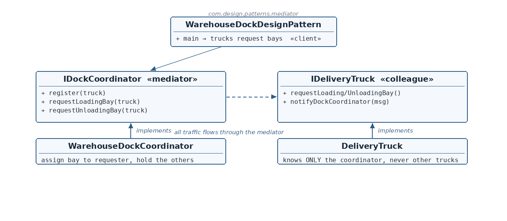

The contracts
☕ 4 min read · 🎬 Video walkthrough · 📊 UML diagram · 💻 Runnable code
⚡ In a nutshell — Centralize how a set of objects interact in one mediator. Colleagues never reference each other — they know only the mediator — so coupling collapses from many-to-many to many-to-one, and coordination rules live in exactly one place.
Centralize how a set of objects interact in one mediator. Colleagues never reference each other — they know only the mediator — so coupling collapses from many-to-many to many-to-one, and coordination rules live in exactly one place.
A warehouse dock: delivery trucks request loading or unloading bays, but only one truck may use the dock at a time — the others must hold position. Trucks must not talk to each other (imagine dozens); they talk only to the dock coordinator, who assigns bays and warns the rest.
IDockCoordinator is the Mediator contract: register(truck) + the two bay-request operations.IDeliveryTruck is the Colleague contract: request operations + a callback (notifyDockCoordinator) the mediator uses to answer.WarehouseDockCoordinator holds the registered trucks and encodes the rule: assign the bay to the requester, tell everyone else to hold.DeliveryTruck self-registers on construction and holds only a coordinator reference — never another truck.
Reading the diagram: all traffic flows through the mediator (dashed arrow). No arrow connects one truck to another — that absence is the pattern.
IDockCoordinator — Mediator contract — register + bay requests.WarehouseDockCoordinator — Concrete mediator — assign/hold coordination rule.IDeliveryTruck — Colleague contract — requests + notification callback.DeliveryTruck — Concrete colleague — knows only the coordinator.WarehouseDockDesignPattern — Client — two trucks, two requests.public interface IDockCoordinator {
void register(IDeliveryTruck truck);
void requestLoadingBay(IDeliveryTruck truck);
void requestUnloadingBay(IDeliveryTruck truck);
}
public interface IDeliveryTruck {
void requestLoadingBay();
void requestUnloadingBay();
void notifyDockCoordinator(String msg);
}
DeliveryTruck.java — the colleaguepublic class DeliveryTruck implements IDeliveryTruck {
private final String truckId;
private final IDockCoordinator coordinator;
public DeliveryTruck(String truckId, IDockCoordinator coordinator) {
this.truckId = truckId;
this.coordinator = coordinator;
coordinator.register(this);
}
@Override
public void requestLoadingBay() {
System.out.println(truckId + " -> Dock: requesting loading bay.");
coordinator.requestLoadingBay(this);
}
...
}
this so the mediator knows who's asking.WarehouseDockCoordinator.java — the mediatorpublic class WarehouseDockCoordinator implements IDockCoordinator {
private final List<IDeliveryTruck> trucks = new ArrayList<>();
@Override
public void requestLoadingBay(IDeliveryTruck truck) {
truck.notifyDockCoordinator("Loading bay assigned.");
notifyOtherTrucks(truck, "Hold position: another truck is loading.");
}
private void notifyOtherTrucks(IDeliveryTruck requester, String msg) {
trucks.stream()
.filter(other -> other != requester)
.forEach(other -> other.notifyDockCoordinator(msg));
}
}
filter(other != requester) is the everyone-but-you broadcast. Unloading mirrors loading with its own messages.IDockCoordinator dockCoordinator = new WarehouseDockCoordinator();
IDeliveryTruck truckOne = new DeliveryTruck("Truck-14", dockCoordinator);
IDeliveryTruck truckTwo = new DeliveryTruck("Truck-29", dockCoordinator);
truckOne.requestLoadingBay();
truckTwo.requestUnloadingBay();
this with each request? To know who to grant and who to warn — colleague identity matters to coordination.Mediator Design Pattern
Truck-14 -> Dock: requesting loading bay.
Dock -> Truck-14: Loading bay assigned.
Dock -> Truck-29: Hold position: another truck is loading.
Truck-29 -> Dock: requesting unloading bay.
Dock -> Truck-29: Unloading bay assigned.
Dock -> Truck-14: Stay clear of the dock: another truck is unloading.
DispatcherServlet; message brokers' routing; UI dialog mediators.Trucks know the dock; the dock knows the rules — no truck ever knows another.
👏 Found this useful? Give it a few claps so more developers discover it, and follow for the whole series — every article ships with a UML diagram, runnable code, a narrated video, and a companion PDF. Happy building! 🚀